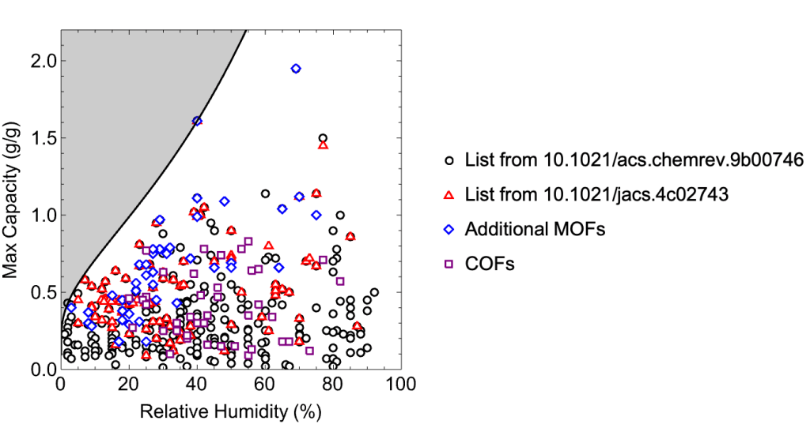
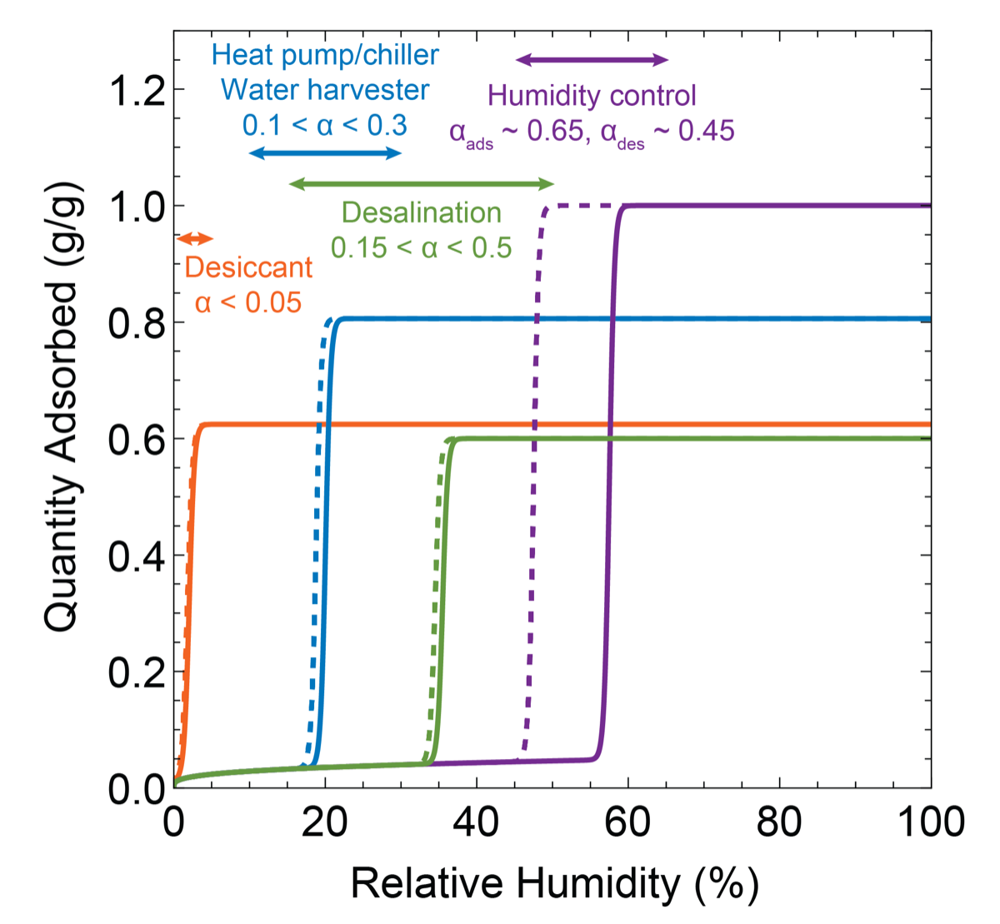
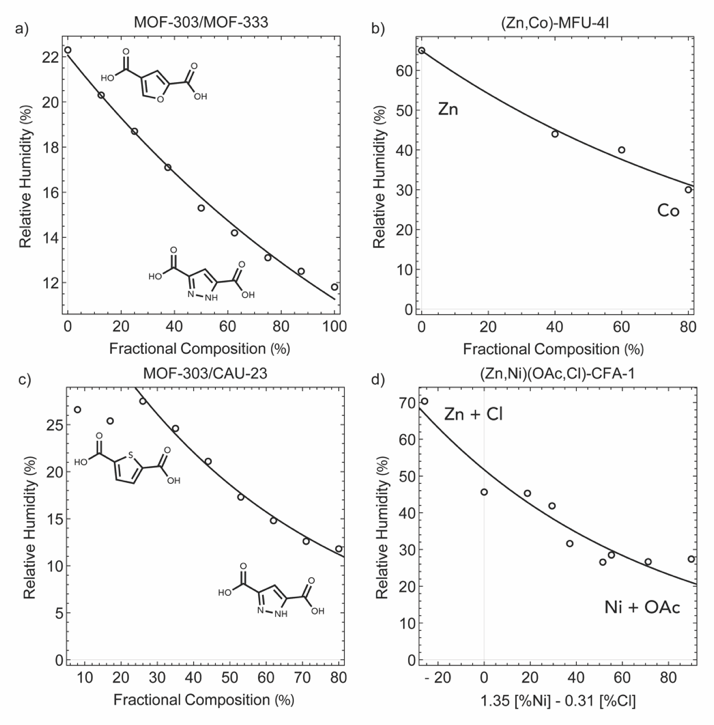
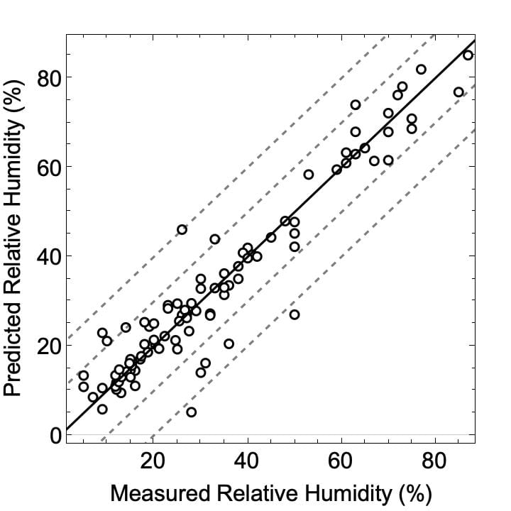
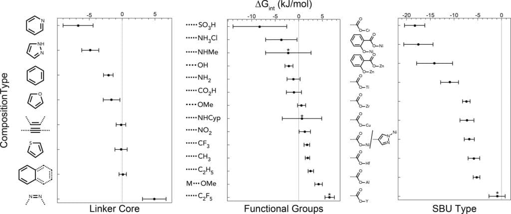
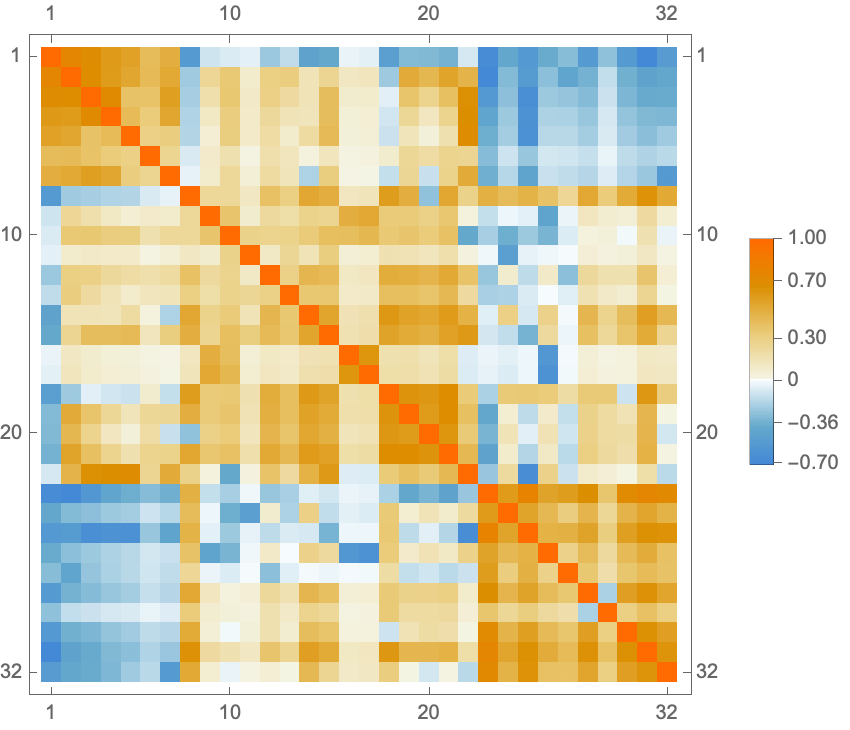

For more information, see our paper “Isoreticular Curves: A Theory of Capillary Condensation To Model Water Sorption within Microporous Sorbents” (J. Am. Chem. Soc. 2024, 146, 20615).
Curated database for properties of MOFs and COFs

The plot and tables are built from data/water-data.js; it did not load.
Each point on the plot corresponds to the relative humidity at which water uptake step occurs and the maximum gravimetric capacity for a single sorbent. Note that sorbents with high capacity at low humidity (shaded) are systematically absent. This region is bounded by a curve with a functional form that can be derived from first principles
The functional form can be derived from first principles, while the coefficients are fit to the most hydrophilic isoreticular curve currently accessible. As such, the bound may be treated as an analogue to a Robeson limit for membrane separation, as it is not a theoretical limit, but instead the current practical limit. The plot is generated directly from the MOF and COF tables below and is updated as the database is updated.
Data
MOF water sorption database
Download: mof-water-sorption.csv
Show table
COF water sorption database
Download: cof-water-sorption.csv
Show table
Why the step happens where it does

Fundamental to many water sorption applications is the sharp and sudden onset of pore filling at a particular relative humidity (RH). This phenomenon, termed capillary condensation, allows for large amounts of water and heat to be cycled over a narrow pressure region. The RH for capillary condensation (α = P/Psat) can be related to the hydrophilicity of the framework, specifically the difference in Gibbs free energy of water at the pore–framework interface relative to bulk water (ΔGint), and the maximum pore radius (r):
where V is the volume of a molecule of water (calculated from the kinetic diameter), A is the projected interfacial area of a molecule of water, k is the Boltzmann constant, and T is the temperature. The pore radius is taken as the radius of the maximally included sphere, as capillary condensation is limited by the largest cavity. The pre-factor 2V/AkT may be approximated, assuming a kinetic diameter of water of 2.65 Å and 25 °C, to be 1.4 Å·mol/kJ.
The maximum gravimetric capacity (Qg) also scales with the maximal pore radius, enabling a direct relationship between the critical RH for capillary condensation and the gravimetric capacity for uptake. This relationship, which we term isoreticular curves, details how the properties for water sorption will respond to an isoreticular expansion of a framework, for a given pore size, topology, and density and volume of framework constituents. Importantly, for an isoreticular series, simply increasing the pore size (by linker expansion) will cause an increase in the critical RH. In order to find sorbents with high capacity at low RH, it is necessary to increase the hydrophilicity of the framework.

Continuous modulation of pore composition
The relationship between the critical RH and ΔGint is particularly valuable for the description of sorbents in which the pore environment varies continuously (i.e., solid solutions). For a system with variation between components A and B, with molar fractions xA and xB, the average Gibbs free energy can be expressed as ΔGint = xAΔGA + xBΔGB. This behavior has been observed in several systems, including MOF-303/MOF-333, mixed-metal MFU-4l, MOF-303/CAU-23, and mixed-metal, mixed-anion CFA-1. In fact, deviations from this behavior may be used to detect structural changes in the respective continuous series.

A hydrophilicity scale from a curated dataset
By regressing upon this relationship using a curated dataset of 96 frameworks containing 32 compositional types (as defined by linker backbone, secondary building unit (SBU), and functional group), an energy scale quantifying the hydrophilicity of frameworks can be determined. The adjusted R2 value for the regression is 0.96, with 89% of the data captured within ±10 %RH of the experimentally determined α value, and 97% of the data captured within ±20 %RH. The fit values for ΔGint form a hydrophilicity scale for the different composition types, enabling rational chemical design to affect the RH for capillary condensation.


The isoreticular curve concept may also be tested against experimental data in which water sorption has been measured across an isoreticular series of frameworks, such as the Ni8L# series or MCM-41 variants with variable pore size and constant hydrophilicity. For both of these series, the relationship between the accessible volume and the critical RH follows the isoreticular curve well.
Regression
The RH for condensation was taken as the RH at half of maximum capacity (on the adsorption branch), the pore radius was calculated from the maximally included sphere (r = LCD/2), and the pre-factor was taken as 1.4 Å·mol/kJ (2 × 0.714 in the code below). ΔGint was averaged by normalizing the energy to the total number of metals and linker types. To make a plot of RH vs capacity, please include the data from both tables.
Download: regression-set.csv (96 materials, 32 parameters; data/parameter = 3.00)
Regression set table
Mathematica code and fitted parameters
nlm = NonlinearModelFit[
data, {E^(2*0.714/(lcd/2)*({a1, a2, a3, a4, a5, a6, a7, a8, a9, a10, a11, a12, a13,
a14, a15, a16, a17, a18, a19, a20, a21, a22, a23, a24, a25,
a26, a27, a28, a29, a30, a31, a32} . {lbenz, larom, lthio,
lfura, lpyra, lpyri, lalke, lazo, fnh3cl, fnh2, fso3h, foh,
fcooh, fome, fno2, fnhme, fnhcyp, fch3, fc2h5, fcf3, fc2f5,
xome*nor, mzr*nor, mcr*nor, mal*nor, mti*nor, mhf*nor,
mnicar*nor, mzncar*nor, cucar*nor, my*nor,
mnipyr*nor})/(Total[{lbenz, larom, lthio, lfura, lpyra, lpyri, lalke, lazo,
mzr*nor, mcr*nor, mal*nor, mti*nor, mhf*nor, mnicar*nor, mzncar*nor,
cucar*nor, my*nor, mnipyr*nor}]))}, {a1, a2, a3, a4, a5, a6, a7, a8, a9, a10,
a11, a12, a13, a14, a15, a16, a17, a18, a19, a20, a21, a22, a23,
a24, a25, a26, a27, a28, a29, a30, a31, a32}, {lcd, lbenz, larom,
lthio, lfura, lpyra, lpyri, lalke, lazo, fnh3cl, fnh2, fso3h, foh,
fcooh, fome, fno2, fnhme, fnhcyp, fch3, fc2h5, fcf3, fc2f5, xome,
mzr, mcr, mal, mti, mhf, mnicar, mzncar, cucar, my, mnipyr, nor},
MaxIterations -> 10000]
nlm["RSquared"]
-> 0.974133
nlm["AdjustedRSquared"]
-> 0.9612
nlm["BestFitParameters"]
-> {a1 -> -2.10906, a2 -> 0.0805185, a3 -> -0.172253, a4 -> -1.61392,
a5 -> -4.85542, a6 -> -6.71165, a7 -> -0.185092, a8 -> 4.88506,
a9 -> -3.70125, a10 -> -1.10911, a11 -> -8.24841, a12 -> -2.08043,
a13 -> -1.02591, a14 -> 0.60088, a15 -> 1.27376, a16 -> -2.21946,
a17 -> 0.680827, a18 -> 1.84476, a19 -> 2.55759, a20 -> 1.71299,
a21 -> 6.55719, a22 -> 4.20624, a23 -> -7.42209, a24 -> -18.3026,
a25 -> -5.27035, a26 -> -10.9464, a27 -> -5.81818, a28 -> -17.5136,
a29 -> -14.103, a30 -> -7.28204, a31 -> -0.942191, a32 -> -6.79632}
nlm["ParameterErrors"]
-> {0.731827, 0.560999, 0.932505, 1.26811, 1.30109, 2.28484, 0.731331,
1.7948, 3.33006, 1.38964, 5.70549, 0.849904, 1.60553, 0.862944,
1.21459, 4.8193, 4.1845, 0.467562, 0.583968, 0.600266, 1.00153,
0.805048, 0.798352, 2.13928, 0.706503, 1.88895, 1.22613, 3.08362,
3.78418, 1.47402, 1.70368, 1.06559}
Rasterize[MatrixPlot[nlm["CorrelationMatrix"], PlotLegends -> Automatic]]
How to cite
J. J. Oppenheim and M. Dincă, “Isoreticular Curves: A Theory of Capillary Condensation To Model Water Sorption within Microporous Sorbents,” J. Am. Chem. Soc. 146(30), 20615–20626 (2024). doi:10.1021/jacs.4c02743